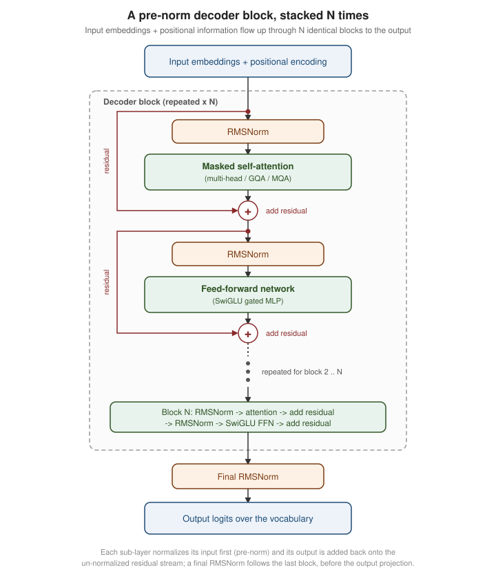
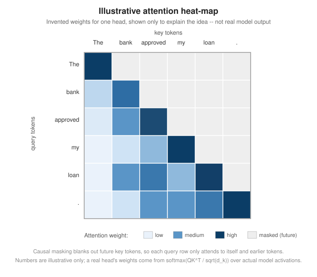

Transformer Architecture
|
This content was generated with the assistance of AI and should be verified against the official documentation before being relied on in production. |
Examples on this page target Python 3.12 with Hugging Face transformers 5.17 (current on PyPI, checked
2026-09-28) and a small, openly licensed decoder-only checkpoint (gpt2, or any similarly sized model already
cached locally) that is cheap enough to load and inspect on a laptop CPU. This page is about the architecture
itself — the layers a transformer language model is built from and how a single request flows through them — not about training it (covered on How LLMs Are Trained) or
about turning its output logits into a chosen token (covered on
Sampling & Decoding). It assumes the vocabulary of
Tokens & Tokenization: by the time text reaches the model
described here, it has already been reduced to a sequence of token IDs and looked up in an embedding table.
The forward pass
A decoder-only transformer’s forward pass is a fixed pipeline applied once per generated token:
-
The input token IDs are looked up in an embedding table, producing one vector per token, and a positional signal is combined with those vectors (below) so the model can tell where each token sits in the sequence, not just which token it is.
-
That sequence of vectors passes through a stack of identical decoder blocks, each one applying self-attention and then a feed-forward network. Current open models (LLaMA, Mistral and most of their successors) use the pre-norm layout: each of the two sub-layers normalizes its input first, and its output is then added back onto the un-normalized residual stream.
-
After the last block, a final normalization step is applied, and a linear projection (often the same weight matrix as the input embedding table, "tied" to save parameters) maps the last position’s vector to one logit per vocabulary entry — the raw scores that Sampling & Decoding turns into a probability distribution over the next token.

Every decoder block has the same shape, so "how big is the model" mostly reduces to two numbers: how many blocks are stacked (depth) and how wide each vector is (the hidden size, typically shared by the embeddings, the residual stream and the attention/feed-forward internals). Everything below fills in what happens inside one block.
Self-attention
Self-attention is the mechanism that lets every token’s representation take information from every other token in the sequence (subject to causal masking, below), rather than only from its own embedding. For each token position, the model derives three vectors from that position’s current representation, using three learned weight matrices:
-
a query ( ) — what this position is "looking for"
-
a key ( ) — what this position "offers" to other positions looking at it
-
a value ( ) — the actual content this position contributes once it is attended to
Attention scores each query against every key by a scaled dot product, turns the scores into a probability distribution over positions with softmax, and uses that distribution to take a weighted average of the value vectors:
is the dimension of each key/query vector; dividing by keeps the dot products from growing so large (as grows) that softmax saturates into a near one-hot distribution before training has had a chance to shape it usefully. In a decoder, this is masked (or "causal") self-attention: position is only allowed to attend to positions , never to a position later in the sequence, which is what makes next-token prediction well posed at every position during training and is why generation at inference time only ever needs to look backward.

The heat-map above is invented for illustration, not captured from a real model; a genuine one would need an actual forward pass over a real prompt, which is exactly what the example script later on this page produces. The pattern it sketches is a realistic shape, though: a token often attends most strongly to itself and to a few semantically or positionally relevant earlier tokens, and the strict lower-triangular structure is what causal masking enforces on every head, in every layer.
Computing the full matrix costs memory and time quadratic in the sequence length, which is why long-context inference is expensive and why kernels such as FlashAttention exist: they compute the same mathematical result while never materializing the full attention matrix in slow memory, trading a different, IO-aware computation order for large speed and memory savings without changing the model’s outputs.
Multi-head attention, the feed-forward network and residual connections
A single attention computation lets the model capture one kind of relationship between tokens (say, subject-verb agreement). Multi-head attention runs several independent attention computations in parallel, each with its own smaller / / projections, so different heads can specialise in different relationships (one head tracking coreference, another tracking nearby syntax, and so on); the heads' outputs are concatenated and passed through one more learned projection back to the model’s hidden size.
Each decoder block’s second major component is a feed-forward network (FFN, also called an MLP block): a position-wise transformation applied identically and independently to every token’s vector, typically expanding to a wider intermediate dimension and then projecting back down. Where attention lets tokens exchange information, the FFN is where most of a transformer’s per-token, non-linear computation happens, and in parameter count it is usually the larger of the two components.
Both sub-layers are wrapped in a residual connection: the sub-layer’s output is added to its input rather than
replacing it (x + sublayer(norm(x)) in the pre-norm layout above), so information and gradients have a direct
path through the whole stack even if a given sub-layer’s contribution is small. Without residual connections,
stacking dozens of layers becomes very difficult to train, because gradients have to flow back through every
intervening transformation unmodified.
RMSNorm and SwiGLU
Two implementation details separate most current open decoder-only models from the original 2017 Transformer, and
both show up in the diagram above, as the RMSNorm steps and the SwiGLU feed-forward block. Their placement
changed too. The 2017 design was post-norm, normalizing after each residual add (Add & Norm). Current models
are pre-norm: they normalize each sub-layer’s input and add the result straight back onto the residual stream,
which leaves a final RMSNorm after the last block:
-
RMSNorm (Root Mean Square Layer Normalization) replaces the original architecture’s LayerNorm. Instead of centering a vector’s components around zero and rescaling by their variance, RMSNorm skips the centering (mean-subtraction) step and only rescales by the root-mean-square of the components, then applies a learned per-component scale. It is simpler to compute (fewer statistics to track) and empirically works as well as LayerNorm for transformer language models, which is why LLaMA, Mistral and many other current decoder-only models use it instead.
-
SwiGLU replaces the FFN’s plain non-linearity (the original architecture used ReLU) with a gated variant: the input is projected through two separate linear layers, one of them passed through the SiLU (Swish) activation, and the two results are multiplied element-wise before a final down-projection. The gate lets the network learn, per dimension, how much of the up-projected signal to let through, which tends to improve quality over a plain non-gated activation for a comparable parameter budget.
Both are configuration choices exposed directly in a Hugging Face model’s config class (for example
rms_norm_eps and a hidden_act of "silu" on LLaMA-family configs), rather than something the surrounding
transformers API code needs to change to support.
Positional encoding and RoPE
Self-attention itself has no notion of token order — above would produce the same set of outputs for any permutation of the input positions, because it only compares content, not position. A transformer therefore has to be given positional information explicitly. The original 2017 Transformer used a fixed sinusoidal signal added to each token’s embedding, one sine/cosine pair per dimension at a different frequency; BERT and GPT-2 instead learned a position embedding table the same way they learned a token embedding table.
Most current decoder-only models use Rotary Position Embedding (RoPE) instead. RoPE does not add anything to the token vector; it rotates each query and key vector by an angle that depends on the token’s absolute position, using a different rotation frequency per pair of dimensions. Because a rotation composes additively (rotating by position and by position , then taking their dot product, depends only on the relative offset ), the scores end up encoding relative position directly, which generalises better to sequence lengths not seen during training than an absolute, learned position table does. RoPE is applied inside the attention computation itself (to and only, never to ), so it needs no extra parameters and no change to the rest of the block.
Encoder, decoder and encoder-decoder architectures
Three families of transformer differ in which direction attention is allowed to look and in whether the model also generates a separate output sequence:
-
Encoder-only (BERT and its descendants) — every position attends to every other position, in both directions, with no causal mask. This produces one contextual vector per input token and suits understanding/representation tasks (classification, and the embedding models covered on Embeddings) rather than open-ended generation, since nothing stops a position from "seeing the future" during training.
-
Decoder-only (GPT-style models, and the large majority of current chat-oriented LLMs) — causal, masked self-attention only, as described above. A single stack both reads the prompt and generates the continuation one token at a time, which is why this is the architecture the rest of this page, and this whole documentation section, focuses on.
-
Encoder-decoder (T5, and the original 2017 Transformer, built for machine translation) — an encoder reads the whole input bidirectionally, and a separate decoder stack generates the output autoregressively while additionally attending, through cross-attention, over the encoder’s output. This suits sequence-to-sequence tasks where the input and output are genuinely two different sequences (translation, summarisation) rather than one continuous stream of text.
Multi-query and grouped-query attention
Serving a decoder-only model efficiently means caching every previous token’s key and value vectors (the KV cache, covered in more depth on Context Windows & Memory) so they need not be recomputed at every new generation step. With standard multi-head attention, that cache holds one key and one value vector per head, which becomes a serving-time memory and bandwidth bottleneck as context length and batch size grow.
-
Multi-Query Attention (MQA) keeps separate query heads but has all of them share a single key/value head, shrinking the KV cache by a factor equal to the number of heads, at some cost to quality.
-
Grouped-Query Attention (GQA) is the now-common middle ground: query heads are split into a small number of groups, and each group shares one key/value head — more key/value heads than MQA’s one, fewer than plain multi-head attention’s one-per-query-head, trading a smaller KV cache for less quality loss than MQA alone.
A Hugging Face model config exposes both the number of query heads and the number of key/value heads directly, and the relationship between the two tells you which of the three regimes a given model uses: equal counts is plain multi-head attention, a key/value head count of one is MQA, and anything in between is GQA (see the example below, which prints both fields).
Mixture of experts
A Mixture-of-Experts (MoE) model replaces a decoder block’s single, dense feed-forward network with several parallel feed-forward networks ("experts") plus a small learned router that, for each token, selects a small subset of those experts to actually run — from 2 of 8 in Mixtral to about 8 of 128-256 fine-grained experts in DeepSeek-V3 and Qwen3-MoE (DeepSeek-V3 also runs one always-on shared expert for every token). Total parameter count grows with the number of experts, but the compute cost of a forward pass only grows with how many experts are activated per token, so an MoE model can hold far more parameters in total than a same-cost dense model while running roughly as fast as its dense counterpart per token. The trade-off is memory: even though only a few experts run per token, all of them typically have to be resident (in GPU memory, or paged in) to serve arbitrary tokens efficiently, and routing adds its own complexity (load-balancing experts so training does not collapse onto a favourite few, and communication overhead when experts are sharded across devices).
State-space alternatives: Mamba
Every architecture above shares self-attention’s core cost: computing over the whole sequence is in sequence length , and the KV cache grows linearly with how many tokens have been generated so far. State-space models such as Mamba take a different approach, descended from classical linear state-space models and structured convolutions rather than from attention: they maintain a fixed-size hidden state that is updated one token at a time by a (selectively, input-dependent) linear recurrence, so inference cost per generated token, and the memory needed to carry state forward, stay constant regardless of how long the sequence already is — unlike a transformer’s KV cache, which keeps growing.
That constant-memory, linear-time profile is Mamba’s main appeal for very long sequences, at the cost of giving up attention’s ability to directly compare any two positions regardless of distance; recent architectures often hybridise the two ideas, mixing a majority of state-space blocks with a minority of ordinary attention blocks to recover some of that long-range, exact-comparison ability. Mamba is a genuinely different family from the decoder-only transformer this page otherwise focuses on, and is covered here only as an alternative worth knowing about, not as a drop-in replacement in the examples above.
Inspecting attention with transformers
output_attentions=True asks a Hugging Face model to return its per-layer attention weight tensors alongside
the usual logits, and the model’s config object exposes the head counts discussed above directly, which is
enough to see a real model’s shape (including whether it uses GQA) without touching any of its numerical
weights:
import torch
from transformers import AutoModelForCausalLM, AutoTokenizer
model_name = "gpt2" # any small, locally cached decoder-only checkpoint works
tokenizer = AutoTokenizer.from_pretrained(model_name)
model = AutoModelForCausalLM.from_pretrained(model_name, attn_implementation="eager")
model.eval()
config = model.config
print(f"num_attention_heads={config.num_attention_heads}")
print(f"num_key_value_heads={getattr(config, 'num_key_value_heads', config.num_attention_heads)}")
inputs = tokenizer("The bank approved my loan.", return_tensors="pt")
with torch.no_grad():
outputs = model(**inputs, output_attentions=True)
# one tensor per decoder layer, shaped (batch, heads, query_positions, key_positions)
for layer_index, attention in enumerate(outputs.attentions):
print(f"layer {layer_index}: {tuple(attention.shape)}")attn_implementation="eager" is required here because the faster, fused attention backends (such as
sdpa or a FlashAttention-based one) never materialise a full attention matrix in the first place, so they
cannot return one; output_attentions=True silently falls back to (or requires) the eager path. gpt2 reports
equal num_attention_heads and num_key_value_heads (plain multi-head attention, no GQA), so a model that
uses grouped-query attention — for example a LLaMA- or Mistral-family checkpoint — is a better choice for
seeing the two counts actually differ. See the official
Hugging Face transformers: model output
classes page for the attentions field on CausalLMOutputWithPast, and the
Hugging Face transformers: LLM inference
optimization page for attn_implementation and why the fused backends cannot return attention weights.
References
-
Su et al., RoFormer: Enhanced Transformer with Rotary Position Embedding (RoPE)
-
Dao et al., FlashAttention: Fast and Memory-Efficient Exact Attention with IO-Awareness
-
Ainslie et al., GQA: Training Generalized Multi-Query Transformer Models from Multi-Head Checkpoints
-
Gu & Dao, Mamba: Linear-Time Sequence Modeling with Selective State Spaces